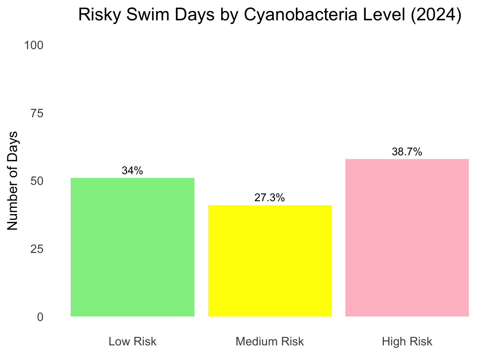
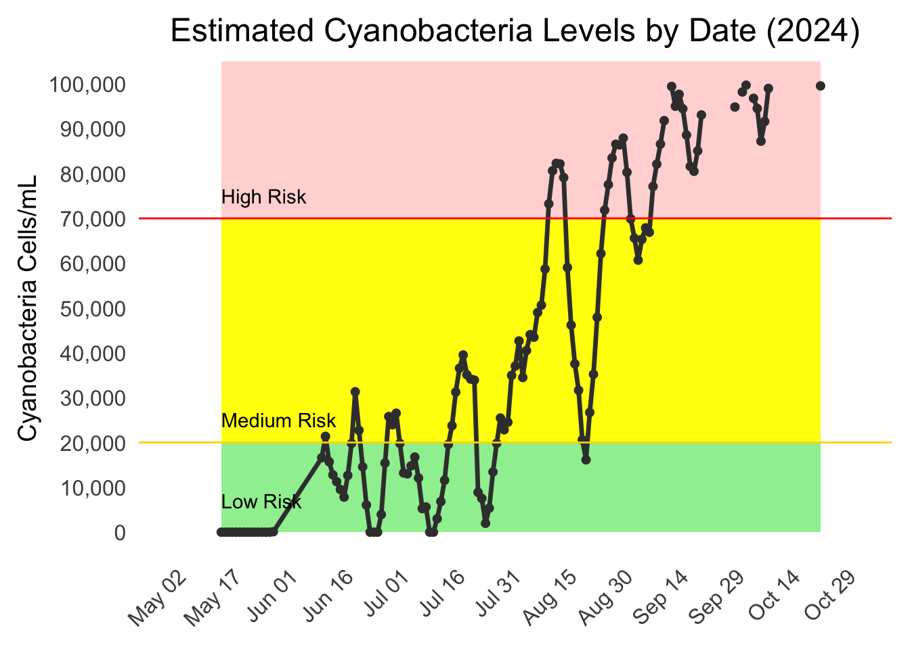
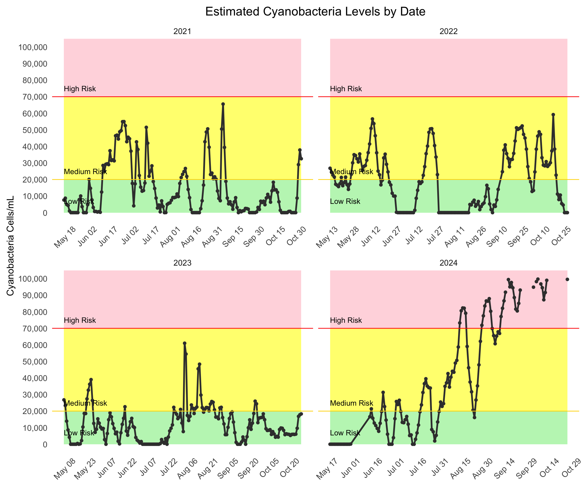
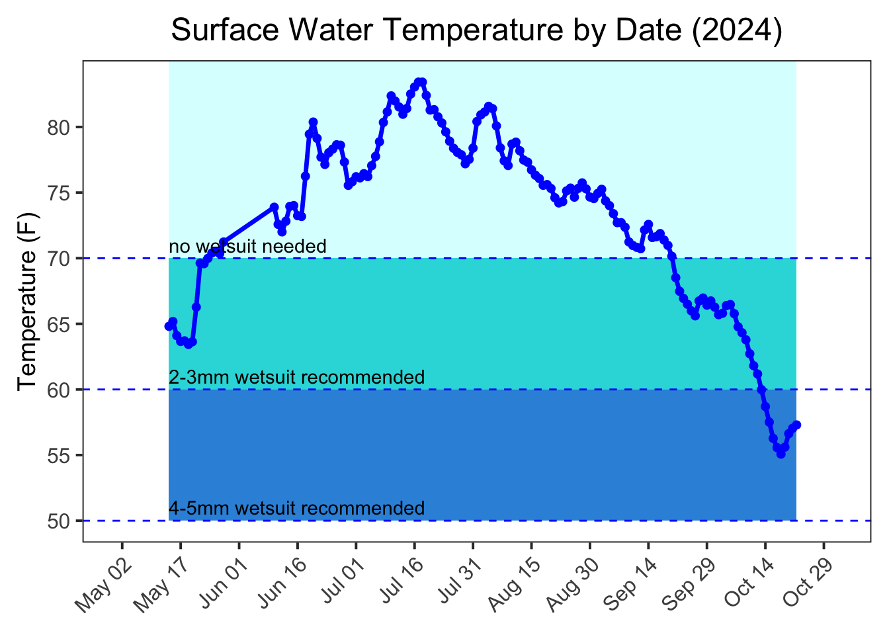
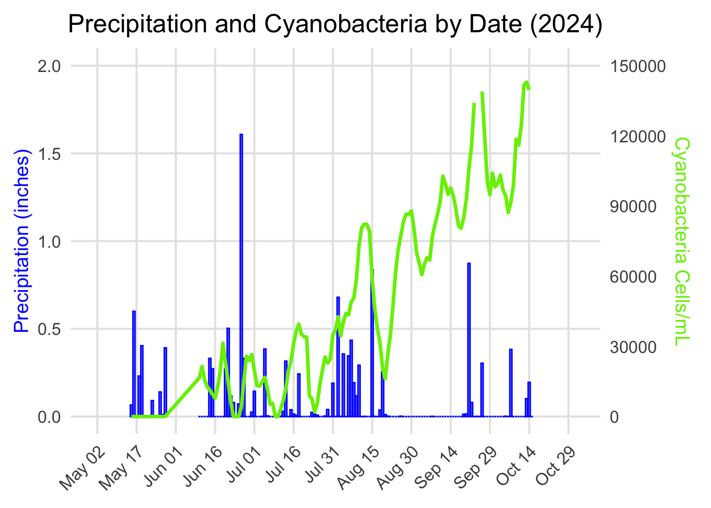

3.1 How many days of the year are cyanobacteria levels safe for swimming in the Charles River?
In 2024, between May and October 2024, cyanobacteria levels were low risk on 51 days (34%), medium risk on 41 days (27%), and high risk on 58 days (39%).
Code
library(dplyr)library(ggplot2)library(tidyr)library(lubridate)# DAILY 2024water2024<-read.csv('./data/crbuoy2024.csv')water2024_summary <- water2024 |>select(date, temp.c, `do..mg.l.`, `est.chl.a..ug.l.`, `est..cyano..cells.ml.`) |>group_by(date) |>summarize(avg_temp =mean((temp.c *9/5) +32, na.rm =TRUE), avg_oxygen =mean(`do..mg.l.`, na.rm =TRUE),avg_chloro =mean(`est.chl.a..ug.l.`, na.rm =TRUE),avg_est_cyano =mean(`est..cyano..cells.ml.`, na.rm =TRUE) )water2024_summary$date <-as.Date(water2024_summary$date, format ="%m/%d/%Y")water2024_summary <- water2024_summary |>mutate(hab_risk =case_when( avg_est_cyano <20000~"Low Risk", avg_est_cyano >=20000& avg_est_cyano <70000~"Medium Risk", avg_est_cyano >=70000~"High Risk" ),hab_risk =factor(hab_risk, levels =c("Low Risk", "Medium Risk", "High Risk")) )# Count the number of days for each risk categoryrisk_counts <- water2024_summary |>count(hab_risk)total_count <-sum(risk_counts$n)risk_counts <- risk_counts |>mutate(percentage = (n / total_count) *100# Calculate percentage for each category )ggplot(risk_counts, aes(x = hab_risk, y = n, fill = hab_risk)) +geom_bar(stat ="identity", show.legend =FALSE) +geom_text(aes(label =paste0(round(percentage, 1), "%")), vjust =-0.5) +# Add percentage labelsscale_fill_manual(values =c("Low Risk"="lightgreen", "Medium Risk"="yellow", "High Risk"="pink", "Unknown"="gray")) +labs(title ="Number of Risk Days Based on Cyanobacteria Levels",x ="Risk Category",y ="Number of Days" ) +theme_minimal()

3.1.1 Estimated Cyanobacteria Levels
Cyanobacteria levels increased throughout the course of the summer, suggesting that it may be safer to swim in the earlier summer months than the later months.
Code
ggplot(water2024_summary, aes(x = date, y = avg_est_cyano)) +geom_rect(aes(xmin =min(date), xmax =max(date),ymin =0, ymax =20000),fill ="lightgreen", alpha =0.05) +geom_rect(aes(xmin =min(date), xmax =max(date),ymin =20000, ymax =70000),fill ="yellow", alpha =0.05) +geom_rect(aes(xmin =min(date), xmax =max(date),ymin =70000, ymax =Inf),fill ="pink", alpha =0.05) +geom_line() +geom_point() +geom_hline(yintercept =20000, linetype ="dashed", color ="yellow") +geom_hline(yintercept =70000, linetype ="dashed", color ="pink") +annotate("text", x =min(water2024_summary$date), y =7000,label ="Low Risk", hjust =0) +annotate("text", x =min(water2024_summary$date), y =25000,label ="Medium Risk", hjust =0) +annotate("text", x =min(water2024_summary$date), y =75000,label ="High Risk", hjust =0) +scale_y_continuous(labels = scales::comma,breaks =seq(0, max(water2024_summary$avg_est_cyano), by =10000) ) +labs(title ="2024 Charles River Estimated Cyanobacteria Levels",x ="Date",y ="Cyanobacteria Cells/mL") +theme_bw() +scale_x_date(date_labels ="%b %d", date_breaks ="15 day")

3.1.2 Water Temperature
Another simple factor affecting a swimmer’s decision to enter urban waters is water temperature. Good news! For all of June, July, and August the surface water temperature was above 70 degrees Fahrenheit. For swimming in May or September, a 2-3mm wetsuit is recommended. In October, a 4-5mm wetsuit is recommended.
Code
ggplot(water2024_summary, aes(x = date, y = avg_temp)) +geom_rect(aes(xmin =min(date), xmax =max(date), ymin =70, ymax =Inf), fill ="cadetblue1", alpha =0.01) +geom_rect(aes(xmin =min(date), xmax =max(date), ymin =60, ymax =70), fill ="#17c3b2", alpha =0.01) +geom_rect(aes(xmin =min(date), xmax =max(date), ymin =50, ymax =60), fill ="#1f77b4", alpha =0.01) +geom_line() +geom_point() +geom_hline(yintercept =70, linetype ="dashed", color ="blue") +geom_hline(yintercept =60, linetype ="dashed", color ="blue") +geom_hline(yintercept =50, linetype ="dashed", color ="blue") +annotate("text", x =min(water2024_summary$date), y =71, label ="no wetsuit needed", hjust =0) +annotate("text", x =min(water2024_summary$date), y =61, label ="2-3mm wetsuit recommended", hjust =0) +annotate("text", x =min(water2024_summary$date), y =51, label ="4-5mm wetsuit recommended", hjust =0) +scale_y_continuous(breaks =seq(0, max(water2024_summary$avg_temp), by =5)) +labs(title ="2024 Charles River Water Temperature", x ="Date", y ="Temperature (F)") +theme_bw() +scale_x_date(date_labels ="%b %d", date_breaks ="15 day")

3.2 Is rainfall correlated with water quality?
Overall, while there is some evidence of a relationship between precipitation and cyanobacteria levels, precipitation alone does not explain much of the variation in cyanobacteria levels. Other factors (e.g., nutrients, temperature) might play a more substantial role in driving variations in cyanobacteria.
Rainfall alone is not a strong predictor of cyanobacteria levels. The Spearman correlation of -0.2927 indicates a weak negative correlation between precipitation (precip) and cyanobacteria levels (avg_est_cyano). This suggests that, in general, as precipitation increases, cyanobacteria levels tend to decrease slightly, but the relationship is weak.
Code
library(dplyr)library(ggplot2)library(tidyr)library(lubridate)library(scales)weather2024<-read.csv('./data/weather2024daily.csv')weather2024<-weather2024 |>select(datetime,temp,precip)weather2024$date<-as.Date(weather2024$datetime, format ="%Y-%m-%d")weather_and_water_2024<-merge(water2024_summary, weather2024, by ='date')ggplot(weather_and_water_2024, aes(x = date)) +geom_col(aes(y = precip, color ="Precipitation")) +geom_line(aes(y = avg_est_cyano /75000, color ="Avg Est Cyano")) +scale_y_continuous(name ="Precipitation (inches)",limits =c(0, 2),breaks =seq(0, 2, 0.5),sec.axis =sec_axis(~.*75000, name ="Avg Est Cyano", breaks =seq(0, 150000, 30000)) ) +scale_color_manual(values =c("Precipitation"="blue", "Avg Est Cyano"="chartreuse2")) +labs(title ="Precipitation and Avg Est Cyano over Time",x ="Date",color ="Variable") +theme_minimal() +theme(axis.title.y.right =element_text(color ="chartreuse2"),axis.title.y.left =element_text(color ="blue"))

Code
ggplot(weather_and_water_2024, aes(x = precip, y = avg_est_cyano)) +geom_point() +# Scatter plot to visualize the relationshipgeom_smooth(method ="loess", color ="blue") +# Adding a smooth curve to visualize trendslabs(title ="Precipitation vs Cyanobacteria Levels",x ="Daily Precipitation (inches)", y ="Cyanobacteria Levels (cells/mL)") +theme_minimal()

Code
# Histogram for precipitationggplot(weather_and_water_2024, aes(x = precip)) +geom_histogram(binwidth =0.1, fill ="skyblue", color ="black") +labs(title ="Distribution of Precipitation (inches)", x ="Precipitation (inches)", y ="Count")
Code
# Histogram for cyanobacteria levelsggplot(weather_and_water_2024, aes(x = avg_est_cyano)) +geom_histogram(binwidth =5000, fill ="orange", color ="black") +labs(title ="Distribution of Cyanobacteria Levels", x ="Cyanobacteria (cells/mL)", y ="Count")
Code
weather_and_water_2024$log_cyano <-log(weather_and_water_2024$avg_est_cyano +1) # Adding 1 to avoid log(0)lm_model <-lm(avg_est_cyano ~ precip, data = weather_and_water_2024)library(mgcv)gam_model <-gam(avg_est_cyano ~s(precip), data = weather_and_water_2024)cor_test <-cor.test(weather_and_water_2024$precip, weather_and_water_2024$avg_est_cyano, method ="spearman", use ="complete.obs")cor_test$p.value
[1] 0.0004086186
Code
# Lag precipitation by a day# weather_and_water_2024$lag_1_precip <- lag(weather_and_water_2024$precip, n = 1)# cor_1_day_lag_spearman <- cor(weather_and_water_2024$lag_1_precip, weather_and_water_2024$avg_est_cyano, method = "spearman", use = "complete.obs")# print(paste("Spearman correlation with 1-day lag:", cor_1_day_lag_spearman))cor_spearman<-cor(weather_and_water_2024$precip, weather_and_water_2024$avg_est_cyano, method ="spearman", use ="complete.obs")ggplot(weather_and_water_2024, aes(x = precip, y = avg_est_cyano)) +geom_point() +geom_smooth(method ="lm", se =FALSE, color ="blue") +labs(title ="Precipitation vs Cyanobacteria Levels", x ="Precipitation (mm)", y ="Cyanobacteria Levels (cells/mL)")
Code
cor_test <-cor.test(weather_and_water_2024$precip, weather_and_water_2024$avg_est_cyano, method ="spearman", use ="complete.obs")